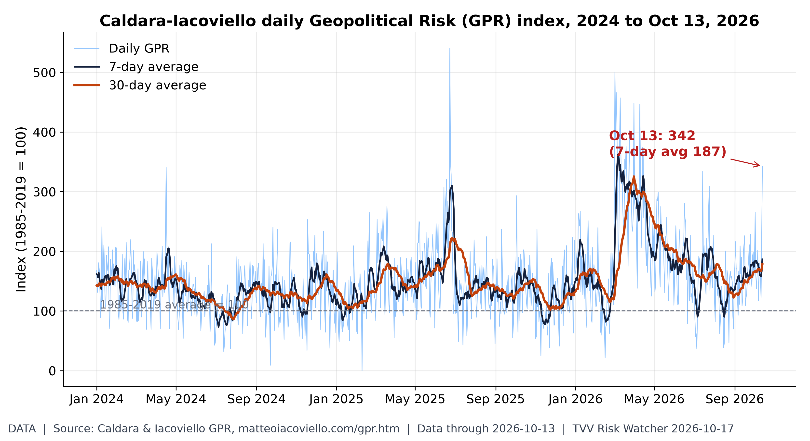
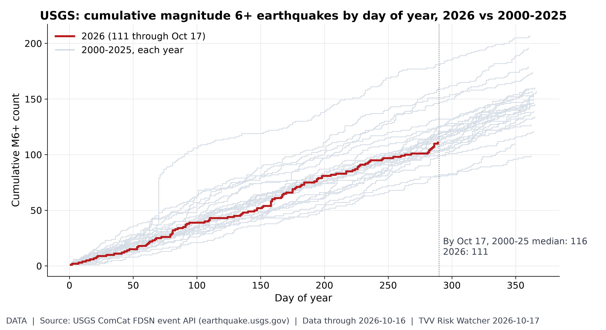
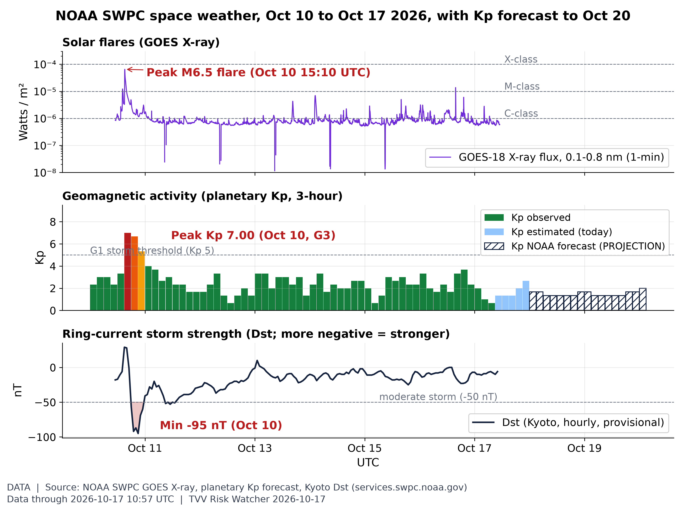
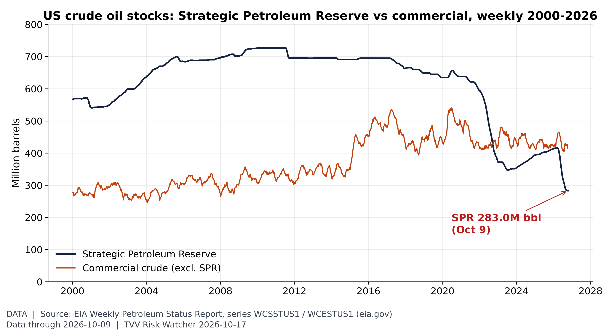
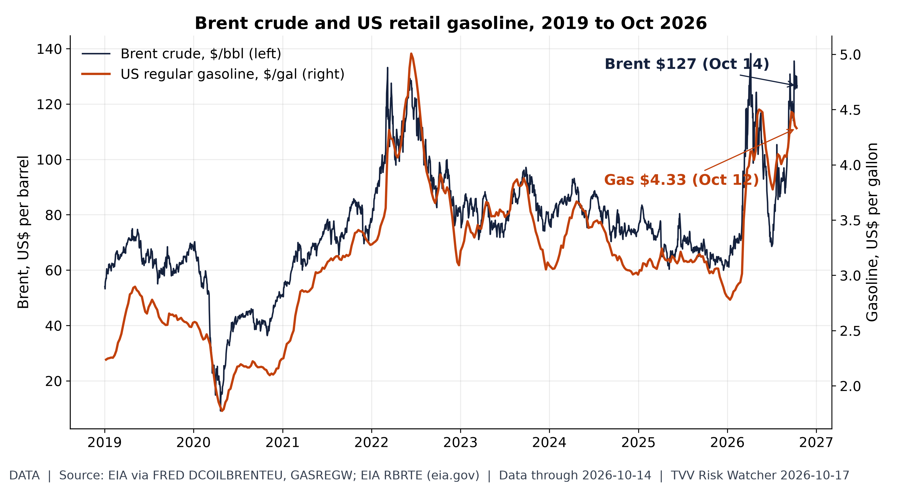
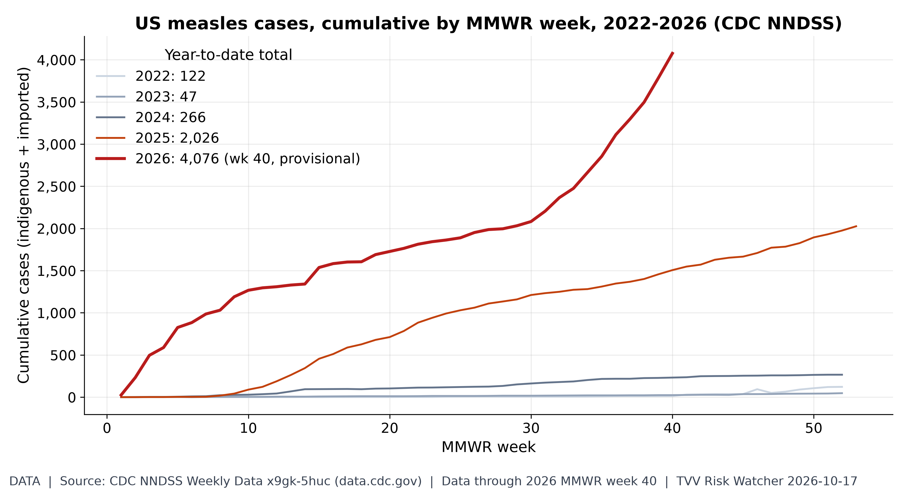
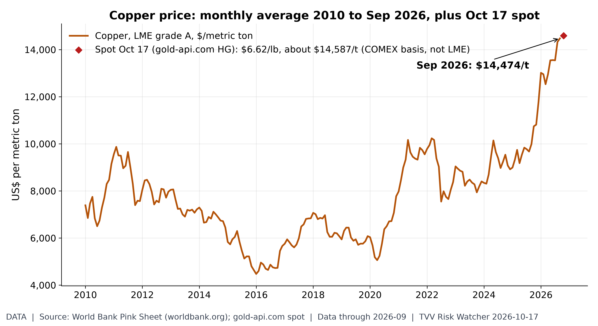
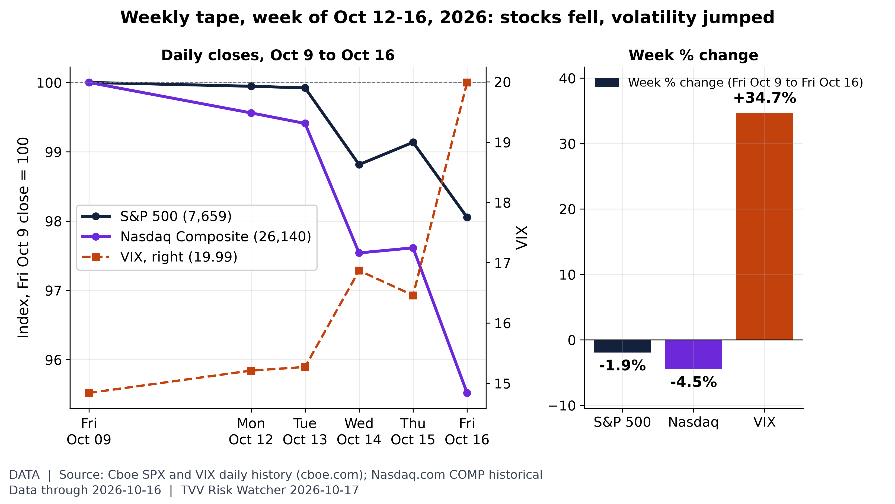
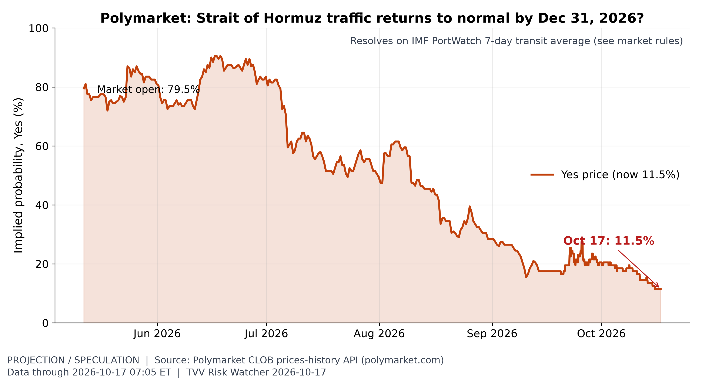
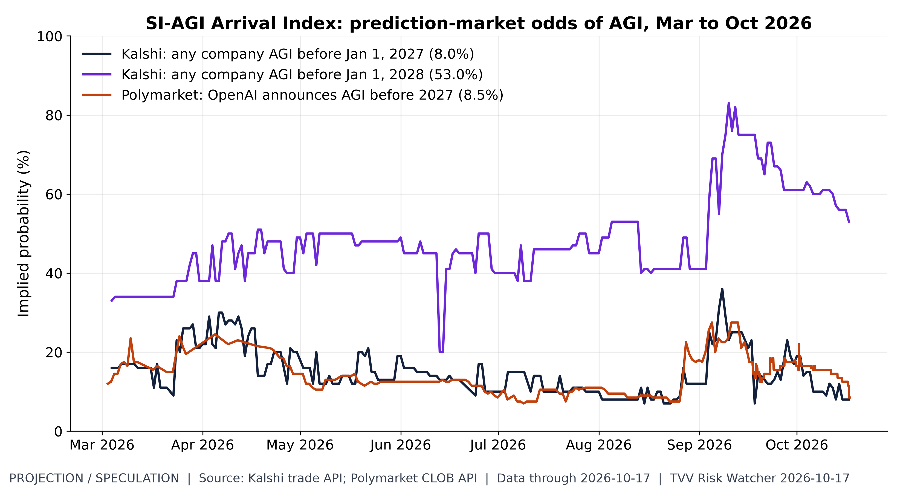

TVV RESEARCH SLATE — October 17, 2026 — 11 desks
1. Major Geopolitical Conflict Developments
- ★ UKMTO's Oct 16 Hormuz overview logged 12 attacks in a week, 10 in the strait, and 254 transits, about 70% below pre-conflict levels; most struck ships refuse to report. UKMTO Oct 16 Hormuz overview · gCaptain unreported attacks
- UKMTO's same overview said 55 of 74 projectile strikes in its current series hit the southern Omani route, even as US-facilitated traffic made up most reported Hormuz transits. UKMTO Oct 16 Hormuz overview
- CENTCOM's Adm. Brad Cooper said Oct 16 the blockade has kept $25 billion of Iranian oil off markets, 400 ships got US help in a week, and 20-plus mariners died. Times of Israel Cooper video
- ISW counted at least 24 commercial ships targeted by Iran near Hormuz in two weeks, Euronews reported Oct 16, with two US carriers in the Arabian Sea. Euronews escalation signals
- ★ Ukraine's Air Force said Russia fired 332 drones and four cruise missiles overnight into Oct 17, downing 289 drones and all missiles; officials reported seven killed, about 90 injured. Kyiv Independent Oct 17 toll · AP Zelenskyy sanctions plea
- Update: Zelenskyy said Oct 17 the overnight strike hit more than 15 energy sites, one of Russia's biggest grid attacks of the war, aimed at a pre-winter blackout. DW Zelenskyy blackout warning
- UN monitors said Oct 16 that 328 Ukrainian civilians were killed and 2,105 wounded last month, 85% above a year earlier, calling early October among the deadliest periods in years. Al Jazeera UN casualty report
- ★ Peace talks: Zelenskyy said Oct 16 that Putin wants no talks in any format, while Putin called a 660 km border security zone, 70% held per Peskov, non-negotiable. Kyiv Post Zelensky remarks · RTE Putin security zone
- Trump on Oct 16 signed an order implementing the Graham Russia-Iran sanctions act and immediately waived its new Russia sanctions and tariffs, a week after his Russian diesel deal. White House sanctions order · NBC Trump waiver

Daily Geopolitical Risk index. Daily GPR hit 342 on Oct 13, over triple its long-run norm (30-day avg 178), as Hormuz attacks and Russia's missile barrage hit the news. [Data; data as of 2026-10-13 Source: matteoiacoviello.com data page
2. Major Terror / Security Incidents
- ★ Syria's Interior Ministry said Oct 16 its intelligence service arrested two ISIS cell members plotting to bomb a police patrol in the Damascus countryside, seizing one device primed for detonation. North Press ISIS arrests · Welat TV foiled plot
- New in Tangier case: Morocco's DGSN and DGST said Oct 16 forensic tests show the arrested 22-year-old ISIS supporter had already run experimental detonations and built remote-trigger gear. L'Observateur Tangier forensics
- Illinois police said Oct 15 that 19-year-old Alexandros Paporakis, charged with a terrorist threat over a planned Hindu temple mass shooting, drove into the temple lot hours before arrest. NBC temple plot
Terrorism share of geopolitical risk. The terrorism component of AI-GPR rose to 11.1 in September from 7.0 in August, near its March 2026 high of 13.3. [Data; data as of 2026-09 (held: monthly, next update early Nov)] Source: matteoiacoviello.com data page
3. Earthquakes and Eruptions
- USGS lists no damaging M6+ quake since Oct 14: the Oct 16 Ozernovskiy M6.9 stayed green PAGER, and no M6 or larger has struck since 0335 UTC Oct 16. USGS significant quake search · USGS Ozernovskiy M6.9

M6+ earthquake pace. 2026 has 111 M6+ quakes through Oct 17 vs a 2000-25 median of 116 by this date: a normal pace. Latest M6+: M6.9 76 km NE of Ozernovskiy, Russia (Oct 16 UTC); none since. [Data; data as of 2026-10-16 (last M6+; USGS feed checked ~7 AM ET Oct 17, no newer M6+)] Source: earthquake.usgs.gov data page
4. Solar / Space Weather
- ★ Unconventional warning, not established science: Stefan Burns claimed Oct 16 that the magnetic pole's 38 km-a-year drift and a 61,000 nT Siberian flux lobe portend more big Eurasian quakes. Burns: A Pattern Has Emerged
- Burns also said Oct 16 a large, growing Earth-facing sunspot and plasma filament launches since Oct 14 could bring space weather within days, while conceding his quake links are speculation. Burns: A Pattern Has Emerged
- ★ NOAA SWPC's 1230 UTC Oct 17 forecast expects a peak Kp of only 2.67 through Oct 19, with no G1 or greater storms and S1 radiation odds at 5%. SWPC 3-day forecast
- SWPC shows a quiet week after the G3 storm, hold since Oct 10 (peak Kp 7.00, Dst -95 nT); daily max Kp stayed at or below 3.67 from Oct 12. SWPC daily geomagnetic indices · Kyoto Dst via SWPC

Space weather this week: flares, Kp, Dst. After the Oct 10 storm (Kp 7.00, Dst -95 nT) and a M6.5 flare, the week ended quiet: Kp is 2.67 so far Oct 17, Dst -6 nT, and NOAA forecasts no storms (max Kp 4.00) through Oct 19. [Data; data as of 2026-10-17 10:57 UTC (X-ray); Kp observed to 2026-10-17 06:00 UTC; Dst to 2026-10-17 10:00 UTC; forecast to 2026-10-20] Source: swpc.noaa.gov data page
5. Critical Infrastructure / Transportation Disruptions
- Ukraine's Energy Ministry said repair crews restored power by Oct 17 to over 1 million people cut off by Friday strikes; about 370,000 Volyn households lost supply. Al Jazeera power cuts
- Le Havre's Terminaux de Normandie said Oct 16 the terminal is closed and cannot process containers after a major IT incident dated Oct 14, with no restart date. Cyberiack Le Havre shutdown
- Italy's air navigation provider ENAV cut operating capacity to 50% on Oct 16 after a network fault, before recovering to 75%, delaying flights at Rome, Milan and Bergamo. ENAV capacity notice · AP Italy air traffic

US emergency oil buffer. The SPR held 283M barrels on Oct 9, its lowest since 1982 and under 40% of its 2010 peak, while Hormuz and Gulf supply are disrupted. [Data; data as of 2026-10-09 (held: weekly; next EIA report due week of Oct 19)] Source: eia.gov data page
6. Econo-Metrics
- ★ Gasoline: AAA's national regular average slipped to $4.3085 a gallon on Oct 17, still a record autumn level as crude stays above $100. AAA national average · AAA newsroom gas prices
- ★ Electricity: EIA's Oct 15 wholesale data showed PJM West peak power for Oct 14 delivery at $265.40/MWh, up $105.14 in a day, as a DOE emergency order covered PJM. EIA wholesale electricity data · DOE PJM emergency order
- ★ CME FedWatch on Oct 17 priced an 83.9% chance of an Oct 28 hold at 3.75%-4.00% and 16.1% for a 25bp hike, with December hike odds near 89%. Investing.com Fed monitor · CME FedWatch tool · Yahoo Oct 16 markets
- BLS said Oct 15 that September producer prices jumped 1.3% for the month and 6.3% on the year, led by energy up 10.8%. BLS PPI release · AP wholesale inflation
- Brent touched $110 on Oct 16 before settling at $109.86, up 3.7%, while WTI rose 3.4% to about $101, CNBC reported, as Hormuz attacks escalated. CNBC oil Oct 16 · Yahoo Oct 16 markets
- Indexes, week to Oct 16: the Dow rose 0.67% to 52,002.41, the S&P 500 fell 1.95% to 7,659.44 and the Nasdaq slid 4.48% to 26,140.03. TechCortex weekly stocks · Yahoo Oct 16 markets
- The 10-year Treasury yield ended Oct 16 near 5.10% after spiking to 5.33% on Wednesday's CPI, with the VIX up 21% Friday to 19.99. Yahoo Oct 16 markets · TechCortex weekly stocks

Oil shock at the pump. Brent spot was $127 on Oct 14, near its April 2026 peak of $138 and above 2022's high; US gasoline averages $4.33, driving September's CPI jump. [Data; data as of 2026-10-14 (Brent, EIA spot; FRED unreachable, EIA RBRTE used); 2026-10-12 (gasoline, weekly)] Source: fred.stlouisfed.org data page
7. Epidemic / Bio-Metrics
- ★ Critical Water Shortage: Defra declared severe drought Oct 15 across six English counties as Ardingly fell to 19% and Wimbleball to 16%; 82% of England remains in drought. Water Magazine severe drought
- Critical Water Shortage: the Philippines' NWRB cut Metro Manila's Angat Dam allocation to 44-46 m3/s and irrigation to 20-25 m3/s, it said Oct 16, ahead of a strong El Nino. ABS-CBN Angat cut
- Kenya has three confirmed Bundibugyo Ebola cases and one death as of Oct 16, WHO Africa said, after a quarantined family contact tested positive Oct 14; 130 contacts listed. WHO AFRO week 41 report
- ECDC said DRC's Ebola outbreak reached 9,277 confirmed cases and 4,478 deaths as of Oct 15, with 65 new cases and 37 deaths reported Oct 14. ECDC Ebola DRC update
- Update: ECDC noted Oct 16 that officials cited by media confirmed two Ebola cases in North Ubangi, which would make it the eighth affected DRC province. ECDC Ebola DRC update
- WHO warned Oct 14 that DRC has logged 51,412 suspected cholera cases and 1,487 deaths in 21 provinces this year, as Ebola strains the health system. UN News DRC cholera
- WHO Africa's Oct 16 report put Kenya's measles outbreak at 533 cases across four counties, alongside mpox in 23 counties and a vaccine-derived polio case in Garissa. WHO AFRO week 41 report

US measles resurgence. NNDSS shows 4,076 US measles cases through week 40, already about double all of 2025 (2,026); week 41 data were still not posted by 7 AM ET Oct 17. [Data; data as of 2026 MMWR week 40 (held: provisional; week 41 not yet posted Oct 17)] Source: data.cdc.gov data page
8. Gold and Silver
- ★ Kitco on Oct 17: gold $4,164.10, silver $56.87, copper $6.6166/lb; bitcoin $81,433.71, ether $2,426.80 and XRP $1.30. Kitco live prices
- Kitco's Friday close showed gold down 0.14% and silver down 0.76%, while copper gained 0.35% on Oct 16. Kitco live prices · Kitco text quotes

Copper at record highs. Copper averaged $14,474/t in September, a record; the Oct 17 spot quote ($6.62/lb, about $14,587/t) is higher still, raising grid and AI data-center build costs. [Data; data as of 2026-09 (World Bank monthly, held); 2026-10-17 07:01 ET (gold-api.com HG spot)] Source: worldbank.org data page
9. Stock Averages and Nasdaq Major Movers
- ★ Gainers: Fair Isaac (FICO) +15.5%; Cognizant (CTSH) +11.5%; Equifax (EFX) +10.6%; Losers: Ciena (CIEN) -26.0%; Coherent (COHR) -25.5%; Lumentum (LITE) -25.3%; S&P wk Oct 16 TechCortex S&P weekly movers
- ★ Gainers: Brown & Brown (BRO) +10.4%; Accenture (ACN) +9.9%; Gallagher (AJG) +9.5%; Losers: HPE (HPE) -25.0%; Skydance (SKYD) -24.6%; Flex (FLEX) -24.5%; S&P wk Oct 16 TechCortex S&P weekly movers
- ★ Gainers: Tyler Tech (TYL) +9.5%; Darden (DRI) +9.5%; Brown-Forman (BF.B) +9.4%; Losers: Supermicro (SMCI) -24.4%; Dell (DELL) -22.9%; Bloom Energy (BE) -21.1%; S&P wk Oct 16 TechCortex S&P weekly movers
- ★ Gainers: Cognizant (CTSH) +10.6%; CoStar (CSGP) +10.6%; Verisk (VRSK) +7.6%; Losers: CoreWeave (CRWV) -23.5%; Rocket Lab (RKLB) -22.6%; Nebius (NBIS) -21.2%; Nasdaq-100 wk Oct 16 Capital Insight Nasdaq-100 weekly
- ★ Gainers: Charter (CHTR) +7.5%; Coca-Cola EP (CCEP) +7.0%; Idexx (IDXX) +7.0%; Losers: Applied Materials (AMAT) -17.7%; Teradyne (TER) -15.3%; Palo Alto (PANW) -15.3%; Nasdaq-100 wk Oct 16 Capital Insight Nasdaq-100 weekly

The week's tape: risk-off into the weekend. For the week the S&P 500 fell 1.9% to 7,659 and the Nasdaq 4.5% to 26,140, with Wednesday (-1.1%) and Friday (-1.1%) the worst S&P days; the VIX rose 35% to 19.99 (Friday intraday high 22.31). [Data; data as of 2026-10-16 (Friday closes; FRED unreachable, Cboe and Nasdaq.com closes used)] Source: cboe.com data page
10. Polymarket and Kalshi Sentiment Highlights
- ★ Ukraine ceasefire: Polymarket priced a Russia-Ukraine ceasefire deal by Dec 31 at 13.5% on Oct 17, with 7.5% by Nov 30 and 2.2% by Oct 31. Polymarket Ukraine ceasefire
- ★ Hormuz: Polymarket held odds that Strait of Hormuz traffic returns to normal by Dec 31 at 11.5% on Oct 17. Polymarket Hormuz normal
- FOMC: Kalshi's Oct 28 hold contract last traded at 86 cents on Oct 17, the 25bp hike at 14 cents, in line with FedWatch's 83.9% hold. Kalshi Oct Fed decision · Investing.com Fed monitor
- ★ US-Iran: Polymarket priced the US-Iran ceasefire continuing through the Nov 3 midterms at 77.5% on Oct 17. Polymarket US-Iran ceasefire
- Hormuz peak: Kalshi's Oct 12-18 market priced peak daily traffic above 4 at 79%, above 5 at 61% and above 8 at 7% on Oct 17. Kalshi Hormuz peak traffic
- ★ Midterms House: Democrats traded at 90.5% to win the House on Polymarket on Oct 17, with Election Day Nov 3. Polymarket House 2026
- Midterms Senate: Democrats traded at 64.5% to control the Senate on Polymarket on Oct 17, Republicans at 36.5%. Polymarket Senate 2026
- Yemen: a Saudi-Houthi ceasefire announced by Dec 31 traded at 33% on Polymarket Oct 17, with the Oct 31 contract at 3.8%. Polymarket Saudi-Houthi ceasefire
- Fed dissent: Polymarket priced zero October FOMC dissenters at 33% on Oct 17, up from 18.5% a day earlier, with two dissenters at 25.5%. Polymarket Oct Fed dissent
- OpenAI AGI: Polymarket cut odds of an OpenAI AGI announcement before 2027 to 8.5% on Oct 17 from 12.5% on Oct 16. Polymarket OpenAI AGI
- AGI: Kalshi priced any-company AGI before 2027 at 8 cents and before 2028 at 53 cents on Oct 17. Kalshi AGI by date

Hormuz normalisation odds. Traders cut odds of normal Hormuz traffic by Dec 31 from 80% at its May open to 11.5%, pricing a prolonged closure. [Projection/Speculation; data as of 2026-10-17 07:05 ET] Source: polymarket.com data page
11. Tech-Metrics
- ★ Cybercab authorized: Texas DMV's roster, per TeslaBytes and fsddb Oct 17, lists 803 Tesla Robotaxi vehicles, up 64 in a week, including 349 Cybercabs and 454 Model Ys. TeslaBytes TxDMV tracker · fsddb robotaxi tracker
- Cybercab in service: fsddb's receipt tracker on Oct 17 showed 344 logged Tesla rides from 217 unique plates at an $8.60 average fare, with eight plates active in 30 days. fsddb robotaxi tracker
- Cybercab production ramp: the Texas Cybercab count held at 349 through Oct 17 while this week's 64 new registrations were Model Ys; Tesla has published no Cybercab output total. TeslaBytes TxDMV tracker · AI Shift Cybercab 349
- ★ SI-AGI Danger / Arrival Index: on Oct 17 Kalshi priced any-company AGI before 2027 at 8% and before 2028 at 53%, while Polymarket's OpenAI-before-2027 fell to 8.5%. Kalshi AGI by date · Polymarket OpenAI AGI

SI-AGI arrival odds. Markets price AGI before 2027 at only 8-8.5% but before 2028 near 53%: a fast-closing window for AI governance risk. [Projection/Speculation; data as of 2026-10-17 (prices ~7 AM ET)] Source: kalshi.com data page
TECHVESTVENTURES ACTION-ALERT — October 17, 2026
EDITOR — Michael Hentschel
Most news events require or spawn no action or reaction, some (but not many) are or become warnings. We draw attention to substantial lifestyle risks and market risks in particular, some created by Mid-Term Vote anxieties, Middle East tensions, vast over-indebtedness globally, and other events we track. Longer term but capable of causing sudden power surges as serious as the Carrington Event. Climate instability occasioned by long-term cyclical solar electro-magnetic flares, is becoming much more prominent and even more likely. New AI predictive analytics and pattern seekers are pointed in some of these directions, and we monitor imminent likelihood. Some readers might hedge and others might see opportunity. The above is not investment advice.
Graph Sources
• Daily Geopolitical Risk index: https://www.matteoiacoviello.com/gpr.htm
• Daily Geopolitical Risk index (data): https://www.matteoiacoviello.com/gpr_files/data_gpr_daily_recent.xls
• Terrorism share of geopolitical risk: https://www.matteoiacoviello.com/ai_gpr.html
• Terrorism share of geopolitical risk (data): https://www.matteoiacoviello.com/ai_gpr_files/ai_gpr_eventtype_monthly.csv
• M6+ earthquake pace: https://earthquake.usgs.gov/fdsnws/event/1/
• M6+ earthquake pace (data): https://earthquake.usgs.gov/earthquakes/eventpage/us6000u2mq
• Space weather this week: flares, Kp, Dst: https://www.swpc.noaa.gov/products/goes-x-ray-flux
• Space weather this week: flares, Kp, Dst (data): https://services.swpc.noaa.gov/json/goes/primary/xrays-7-day.json
• Space weather this week: flares, Kp, Dst (data): https://services.swpc.noaa.gov/products/noaa-planetary-k-index-forecast.json
• Space weather this week: flares, Kp, Dst (data): https://services.swpc.noaa.gov/products/kyoto-dst.json
• Space weather this week: flares, Kp, Dst (data): https://services.swpc.noaa.gov/text/3-day-forecast.txt
• US emergency oil buffer: https://www.eia.gov/dnav/pet/hist/LeafHandler.ashx?n=PET&s=WCSSTUS1&f=W
• US emergency oil buffer (data): https://www.eia.gov/dnav/pet/hist/LeafHandler.ashx?n=PET&s=WCESTUS1&f=W
• Oil shock at the pump: https://fred.stlouisfed.org/series/DCOILBRENTEU
• Oil shock at the pump (data): https://fred.stlouisfed.org/series/GASREGW
• Oil shock at the pump (data): https://www.eia.gov/dnav/pet/hist/LeafHandler.ashx?n=PET&s=RBRTE&f=D
• US measles resurgence: https://data.cdc.gov/NNDSS/NNDSS-Weekly-Data/x9gk-5huc
• US measles resurgence (data): https://www.cdc.gov/measles/data-research/index.html
• Copper at record highs: https://www.worldbank.org/en/research/commodity-markets
• Copper at record highs (data): https://api.gold-api.com/price/HG
• The week's tape: risk-off into the weekend: https://www.cboe.com/tradable_products/vix/vix_historical_data/
• The week's tape: risk-off into the weekend (data): https://cdn.cboe.com/api/global/us_indices/daily_prices/SPX_History.csv
• The week's tape: risk-off into the weekend (data): https://cdn.cboe.com/api/global/us_indices/daily_prices/VIX_History.csv
• The week's tape: risk-off into the weekend (data): https://www.nasdaq.com/market-activity/index/comp/historical
• The week's tape: risk-off into the weekend (data): https://fred.stlouisfed.org/series/NASDAQCOM
• Hormuz normalisation odds: https://polymarket.com/event/strait-of-hormuz-traffic-returns-to-normal-by-december-31
• Hormuz normalisation odds (data): https://docs.polymarket.com/
• SI-AGI arrival odds: https://kalshi.com/markets/kxagico/will-any-company-achieve-agi-before-date/kxagico-comp
• SI-AGI arrival odds (data): https://polymarket.com/event/openai-announces-it-has-achieved-agi-before-2027